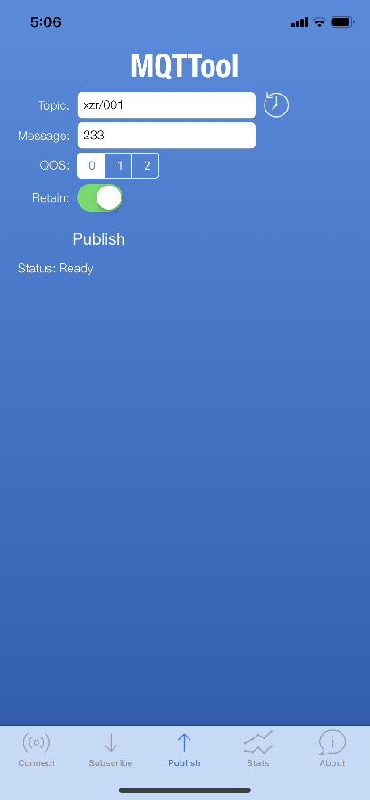
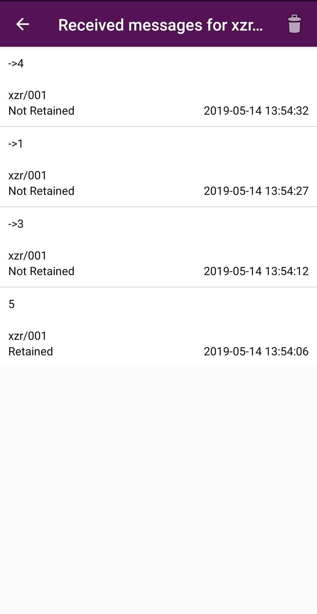

1. 常见MQTT客户端¶
1.1. MQTTBox（PC端）¶
MQTTBox是一款很好用的MQTT客户端调试工具，支持在Windows、Mac和Linux上面运行。
GitHub地址：https://github.com/workswithweb/MQTTBox
首先要设置MQTT服务器信息，如图所示，除了服务器地址、用户名、密码和Protocol外，其他的地方都可以用默认值。

在这个界面中，连接服务器后，就可以给名称为“xzr/003”的Topic发送消息和订阅消息了。
在Web管理界面中，就能看到自动建立的项目中多了“xzr”，设备中多了“003”，通过网页就可以查看所有的消息记录。

注意
- 客户端发送的消息，所有订阅了这一主题的客户端都能收到，包括自己；
- “xzr/003”这个Topic不需要事先设置，只要发过一次消息，SIoT会根据这一Topic自动建立项目名称和设备名称，方便管理；
- 通过Web给Topic发送消息，如果不想将这一消息记录在数据库中，可以在前面加上“->”的标志。
1.2. MQTTfx（PC端）¶
MQTTfx是一款很好用的MQTT客户端调试工具，支持在Windows、Mac和Linux上面运行。设备将当前所处的状态作为MQTT主题发送给IoT Hub，每个MQTT主题topic具有不同等级的名称，如“建筑/楼层/温度。” MQTT代理服务器将接收到的主题topic发送给给所有订阅的客户端。
下载地址（支持windows，linux，mac): http://mqttfx.jensd.de/index.php/download
安装完成后，运行时会提示有更新，最好别点击yes，会报错。
主界面点击左上方的Extras，进入Edit connection Profiles，设置MQTT代理。这里上半部分如图填写（ip地址有时会有不同），下半部分选择User Credentials，填写用户名和密码。

接着回到主界面，点击connect连接到MQTT 代理服务器上，就可以进行订阅和发布消息测试了。

1.3. MQTTool（iPhone手机）¶
MQTTool是运行在iPhone上的MQTT客户端软件，也是一个MQTT测试工具。通过App Store即可安装MQTTool。

首先要确认计算机和手机连接的是同一个无线路由器，或者在同一个局域网中，相互之间可以访问。输入计算机的IP地址和用户名、密码，点击“Connenct”即可连接。
- 图中的username应填写siot

点击“Stats”，可以查看服务器的连接状态。
在“Topic”（主题）中输入“xzr/001”（表示项目id为xzr，设备id为001），点击“Publish”（发送）即可发送消息。在SIoT的Web页面可以看到这一消息。

同样，在Web端给Topic“xzr/001”发送消息，手机端即可收到信息，在“Subscribe”（订阅）。
多个手机同时连接这个MQTT服务器，只要Topic相同，相互之间都能收到。
1.4. MQTT Client（安卓手机）¶
MQTT Client 是一款安卓环境的MQTT客户端软件，也是一个MQTT测试工具。可以在http://www.mdpda.com/app/apk7623192.html 下载。
首先要确认计算机和手机连接的是同一个无线路由器，或者在同一个局域网中，相互之间可以访问。
打开软件，点击右上角的Settings，点击Server。
- 在URL处输入计算机的IP地址，后面跟上“：8080”
- Port填写1883
- Username填写用户名（siot）
- Password填写密码（dfrobot）
- 其他内容保持默认就可以了
发送消息需要在主页面点击右下角的紫色按钮，进入发送消息界面。

在“Topic”（主题）中输入“xzr/001”（表示项目id为xzr，设备id为001），在“Message”（消息）中输入想要发送的消息内容，点击“PUBLISH”（发送）即可发送消息。在SIoT的Web页面可以看到这一消息。

同样，在Web端给Topic“xzr/001”发送消息，手机端即可收到信息，这一消息在主页面可以订阅。
在主页面下方输入想要订阅的主题“xzr/001”，就可以获取实时消息了。
想要看具体的消息收发详情，可以点击相应的栏目查看，例如点击上图中的“xzr/001”就可以出现如下画面。
多个手机同时连接这个MQTT服务器，只要Topic相同，相互之间都能收到。